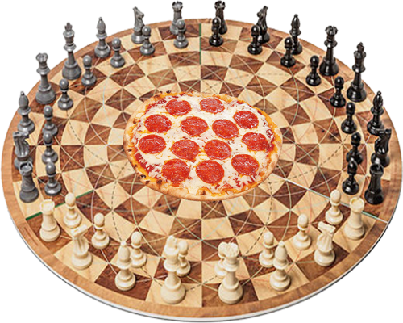

DARE TO BE
STUPID
~~*CHOPPED AND SCREWED*~~
Your browser does not support the audio element.
BACK
four beats
three beats
two beats
one beats
FORWARD
four beats
three beats
two beats
one beats
Chop and screw it, baby. Plop in your ear buds or crank your speaks, and show the world just how STUPID you can be.
No one
is as stupid as you.

Dedicated to Precious